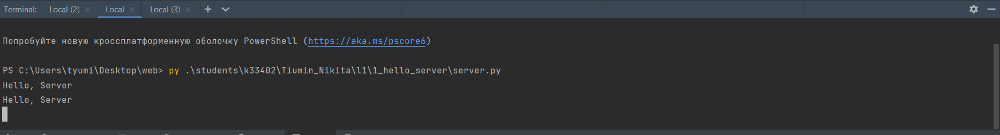
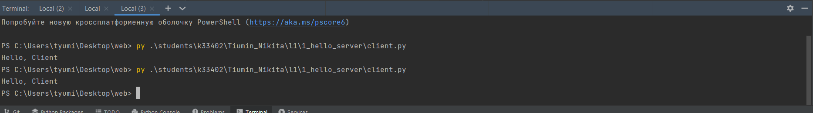
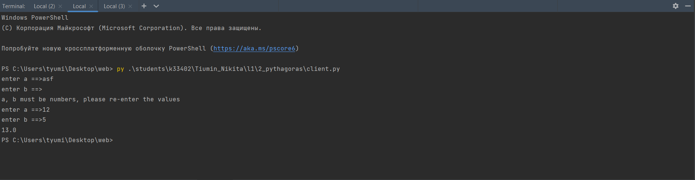
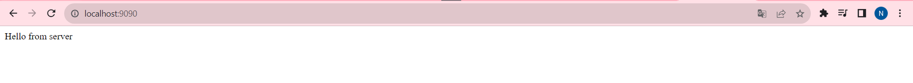
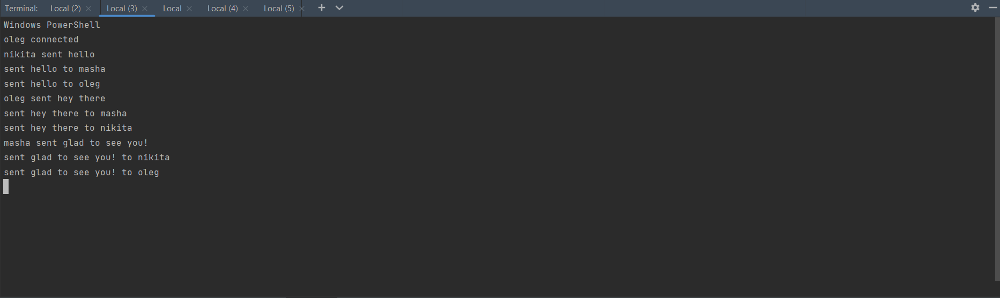
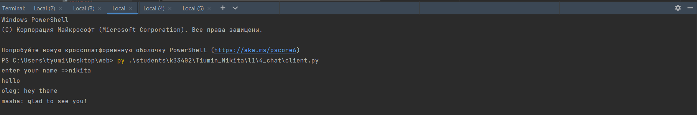
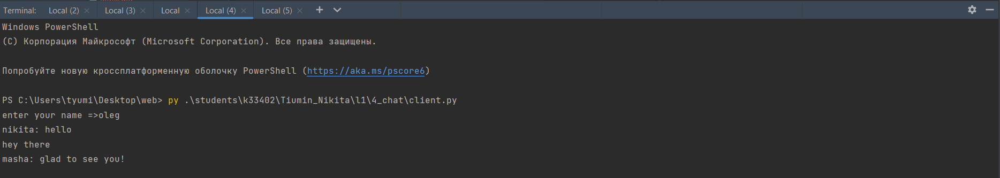
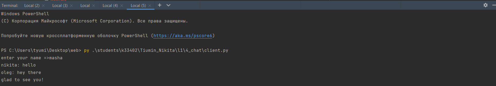
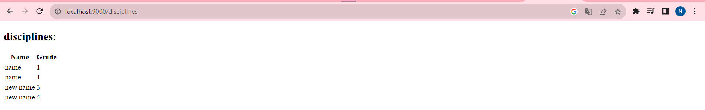
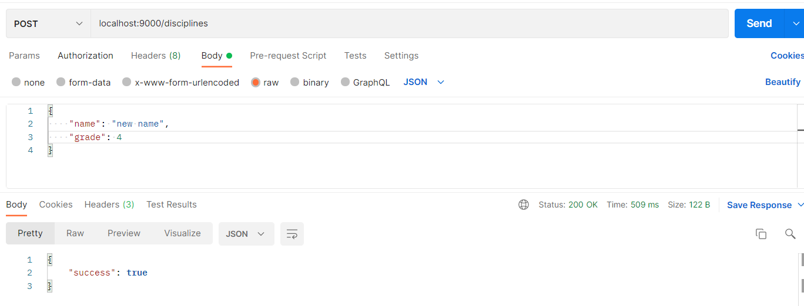

Лабораторная работа №1
Задание №1
Практическое задание:
Реализовать клиентскую и серверную часть приложения. Клиент отсылает серверу сообщение «Hello, server». Сообщение должно отразиться на стороне сервера. Сервер в ответ отсылает клиенту сообщение «Hello, client». Сообщение должно отобразиться у клиента.
Был реализован простой скрипт для клиента и сервера. При подключении клиента к серверу клиент отправляет сообщение на сервер и принимает сообщение от последнего. * Сервер:  * Клиент: 
client.py:
import socket
MESSAGE = 'Hello, Server'
def run():
sock = socket.socket(socket.AF_INET, socket.SOCK_DGRAM)
sock.sendto(MESSAGE.encode('utf-8'), ('localhost', 9090))
message, addr = sock.recvfrom(1024)
print(message.decode('utf-8'))
if __name__ == '__main__':
run()
server.py:
import socket
MESSAGE = 'Hello, Client'
def run():
sock = socket.socket(socket.AF_INET, socket.SOCK_DGRAM)
sock.bind(('', 9090))
while True:
data, addr = sock.recvfrom(1024)
print(data.decode('utf-8'))
sock.sendto(MESSAGE.encode('utf-8'), addr)
if __name__ == '__main__':
run()
Задание №2
Практическое задание:Реализовать клиентскую и серверную часть приложения. Клиент запрашивает у
сервера выполнение математической операции, параметры, которые вводятся с клавиатуры. Сервер обрабатывает полученные данные и возвращает результат клиенту.
Был реализован скрипт для клиента и сервера для расчета гипотенузы в
прямоугольном треугольнике. Клиент вводит длины катетов и подключается
к серверу, с помощью библиотеки pickle, преобразует объект с введенными данными в байтовую строку,
после сервер посылает клиенту результаты расчета. При вводе
неверных данных, программа попросит пользователя ввести их заново
* Клиент:

client.py:
import socket
import pickle
def run():
input_in_progress = True
while input_in_progress:
a = input("enter a ==>")
b = input("enter b ==>")
if a.isnumeric() and b.isnumeric():
input_in_progress = False
else:
print('a, b must be numbers, please re-enter the values')
sock = socket.socket(socket.AF_INET, socket.SOCK_STREAM)
sock.connect(('localhost', 9090))
payload = {a, b}
sock.send(pickle.dumps(payload))
res = sock.recv(1024)
sock.close()
print(res.decode('utf-8'))
if __name__ == '__main__':
run()
server.py:
import socket
import pickle
import math
def run():
sock = socket.socket(socket.AF_INET, socket.SOCK_STREAM)
sock.bind(('', 9090))
sock.listen(1)
while True:
conn, addr = sock.accept()
data = conn.recv(1024)
if not data:
break
a, b = pickle.loads(data)
if not a or not b:
conn.send('a and b must be present and be type of number'.encode('utf-8'))
res = math.sqrt(float(a)**2 + float(b)**2)
conn.send(str(res).encode('utf-8'))
conn.close()
if __name__ == '__main__':
run()
Задание №3
Практическое задание:
Реализовать серверную часть приложения. Клиент подключается к серверу. В ответ клиент получает http-сообщение, содержащее html-страницу, которую сервер подгружает из файла index.html.
Был реализован скрпт, который возвращает HTTP ответ с html-страницей с текстом hello server. 
server.py:
import socket
def run():
sock = socket.socket(socket.AF_INET, socket.SOCK_STREAM)
sock.bind(('', 9090))
sock.listen(1)
while True:
conn, addr = sock.accept()
request_data = conn.recv(1024)
with open('C:\\Users\\tyumi\\Desktop\\web\\students\\k33402\\Tiumin_Nikita\\l1\\3_html\\index.html', 'r') as f:
html = f.read()
conn.send(encode('HTTP/1.0 200 OK\n'))
conn.send(encode('Content-Type: text/html\n'))
conn.send(encode('\n'))
conn.send(encode(html))
conn.close()
def encode(msg):
return msg.encode('utf-8')
if __name__ == '__main__':
run()
Задание №4
Практическое задание:
Реализовать двухпользовательский или многопользовательский чат. Реализация многопользовательского часа позволяет получить максимальное количество баллов.
Был реализован многопользовательский чат с помощью библиотеки threading.
Клиентский скрипт получает от пользователя имя и подключается к серверу.
На стороне клиента работают два потока: один для отправки сообщений, второй
- для получения новых сообщений в режиме реального времени.
На стороне сервера происходит следующее: работает поток для принятия подключений от новых клиентов. После того, как клиент подключился его имя записывается в словарь и для него создается отдельный поток для получения сообщений. Когда от пользователя приходит новое сообщение, оно пересылается всем остальным пользователям. В случае, когда клиент отключается, поток завершается, клиент удаляется из словаря. * Сервер:  * Клиенты:   
client.py:
import socket
import threading
HEADER_LENGTH = 10
def encode_message(msg):
header = f'{len(msg):<{HEADER_LENGTH}}'.encode('utf-8')
message = msg.encode('utf-8')
return header + message
def receive_message(client_socket):
try:
message_header = client_socket.recv(HEADER_LENGTH)
if not message_header:
return False
message_length = int(message_header.decode('utf-8').strip())
return client_socket.recv(message_length).decode('utf-8')
except:
return False
if __name__ == '__main__':
client_socket = socket.socket(socket.AF_INET, socket.SOCK_STREAM)
client_socket.connect(('localhost', 9092))
name = input('enter your name =>')
client_socket.send(encode_message(name))
def send_messages():
while True:
message = input()
client_socket.send(encode_message(message))
def receive_messages():
while True:
message = receive_message(client_socket)
if message:
print(message)
send_messages_thread = threading.Thread(target=send_messages)
send_messages_thread.start()
receive_messages_thread = threading.Thread(target=receive_messages)
receive_messages_thread.start()
server.py:
import socket
import threading
HEADER_LENGTH = 10
def encode_message(msg):
header = f'{len(msg):<{HEADER_LENGTH}}'.encode('utf-8')
message = msg.encode('utf-8')
return header + message
def receive_message(client_socket):
try:
message_header = client_socket.recv(HEADER_LENGTH)
if not message_header:
return False
message_length = int(message_header.decode('utf-8').strip())
return client_socket.recv(message_length).decode('utf-8')
except:
return False
if __name__ == '__main__':
clients = []
server_socket = socket.socket()
server_socket.bind(('', 9092))
server_socket.listen()
def accept_client():
while True:
client_socket, addr = server_socket.accept()
username = receive_message(client_socket)
next_client = (client_socket, username)
clients.append(next_client)
print(f'{username} connected')
next_client_thread = threading.Thread(target=get_message_from_client, args=(next_client,))
next_client_thread.start()
def get_message_from_client(next_client):
client_socket, username = next_client
while True:
message = receive_message(client_socket)
message_to_send = encode_message(f'{username}: {message}')
if message:
print(f'{username} sent {message}')
for notify_client, u in clients:
if notify_client != client_socket:
notify_client.send(message_to_send)
print(f'sent {message} to {u}')
else:
print(f'{username} disconnected')
clients[:] = [i for i in clients if i[0] != client_socket]
break
thread_accept_client = threading.Thread(target=accept_client)
thread_accept_client.start()
Задание №5
Практическое задание:
Необходимо написать простой web-сервер для обработки GET и POST http запросов средствами Python и библиотеки socket.
Был реализован простой сервер.
При новом запросе к серверу, сервер получает из запроса название http-протокола , метод и url. После парсятся url-параметры и, в случае, если это POST-запрос, парсится входящий json-объект.
После метод и url сопоставляются с имеющимися маршрутами, выполняется соответствующий код и возвращаются данные (html-страница или json-объект).
После клиенту отправляется http-ответ: данные о протоколе, статус-код, нужные заголовки и html-страница, или json.
Реализованы два маршрута: * GET /disciplines\ Возвращает все имеющиеся записи в виде html-страницы  * POST /disciplines\ Принимает данные в формате json и записывает их в бд 
server.py:
import socket
from discipline_controller import DisciplineController
import json
import sys
class MyHTTPServer:
def __init__(self, host, port, name):
self.host = host
self.port = port
self.name = name
self.server_socket = None
self.method = None
self.url = None
self.protocol = None
self.parameters = {}
self.post_data = {}
self.headers = {}
self.discipline_controller = DisciplineController()
def serve_forever(self):
server_socket = socket.socket()
server_socket.bind((self.host, self.port))
server_socket.listen()
self.server_socket = server_socket
while True:
self.serve_client()
def serve_client(self):
client_socket, addr = self.server_socket.accept()
request = client_socket.recv(1024)
try:
self.parse_request(request)
response = self.handle_request()
self.send_response(client_socket, response)
print('response sent successfully')
except ValueError as e:
print('empty request')
except Exception as e:
print(e)
def parse_request(self, request):
request = request.decode('utf-8')
request = request.split('\r\n')
method, url, protocol = request[0].split(' ')
self.method, self.url, self.protocol = method.strip(' '), url.strip(' '), protocol.strip(' ')
# GET parameters
parameters = {}
if len(url.split('?')) > 1:
url, raw_parameters = url.split('?')
self.url = url
raw_parameters = raw_parameters.split('&')
for parameter in raw_parameters:
name, value = parameter.split('=')
parameters[name] = value
self.parameters = parameters
headers_stop_index = request.index('')
self.headers = self.parse_headers(request[1:headers_stop_index])
# POST parameters
if method == 'POST':
raw_data = ''.join(request[headers_stop_index + 1:])
self.post_data = json.loads(raw_data)
def parse_headers(self, headers):
parsed_headers = {}
for header in headers:
name, value = header.split(':', 1)
name, value = name.strip(' '), value.strip(' ')
parsed_headers[name] = value
return parsed_headers
def handle_request(self):
try:
route = self.get_routes()[self.url][self.method]
if self.method == 'GET':
return getattr(route['controller'], route['method'])(self.parameters)
elif self.method == 'POST':
return getattr(route['controller'], route['method'])(self.post_data)
except KeyError as e:
with open('C:\\Users\\tyumi\\Desktop\\web\\students\\k33402\\Tiumin_Nikita\\l1\\5_web_server\\not_found.html', 'r') as f:
html = f.read()
return {'type': 'html', 'code': 404, 'data': html}
def send_response(self, client_socket, response):
reasons = {
200: 'OK',
404: 'NOT FOUND',
422: 'UNPROCESSABLE ENTITY',
}
if response["type"] == 'html':
response_body_raw = response["data"].encode('utf-8')
else:
response_body_raw = json.dumps(response['data']).encode('utf-8')
response_headers = {
'Content-Type': f'{"text/html" if response["type"] == "html" else "application/json"}; encoding=utf8',
'Content-Length': len(response_body_raw),
'Connection': 'close',
}
client_socket.send(f'{self.protocol} {response["code"]} {reasons[response["code"]]}\n'.encode('utf-8')) # status line
client_socket.send(''.join(f'{name}: {response_headers[name]}\n' for i, name in enumerate(response_headers)).encode('utf-8')) # headers
client_socket.send('\n'.encode('utf-8'))
client_socket.send(response_body_raw) # body
def get_routes(self):
return {
'/disciplines': {
'GET': {'controller': self.discipline_controller, 'method': 'index'},
'POST': {'controller': self.discipline_controller, 'method': 'store'},
}
}
if __name__ == '__main__':
host = ''
port = 9000
name = 'name'
serv = MyHTTPServer(host, port, name)
try:
serv.serve_forever()
except KeyboardInterrupt:
pass
discipline_controller.py:
class DisciplineController:
def __init__(self):
self.fake_db = {}
self.last_id = 0
def index(self, parameters):
with open('C:\\Users\\tyumi\\Desktop\\web\\students\\k33402\\Tiumin_Nikita\\l1\\5_web_server\\index.html') as f:
html = f.read()
html_to_insert = ''
for name in self.fake_db:
for grade in self.fake_db[name]:
html_to_insert += '<tr>'
html_to_insert += '<td>' + name + '</td>'
html_to_insert += '<td>' + grade + '</td>'
html_to_insert += '</td>'
html = html.replace('#content', html_to_insert)
return {'type': 'html', 'code': 200, 'data': html}
def store(self, data):
if 'name' not in data or 'grade' not in data:
return {'type': 'json', 'code': 422, 'data': {'error': 'name and grade are required'}}
if data['name'] in self.fake_db:
self.fake_db[self.escape(data['name'])].append(self.escape(data['grade']))
else:
self.fake_db[self.escape(data['name'])] = [self.escape(data['grade'])]
print(self.fake_db)
return {'type': 'json', 'code': 200, 'data': {'success': True}}
def escape(self, string):
return str(string).replace("&", "&").replace('"', """).replace("<", "<").replace(">", ">")